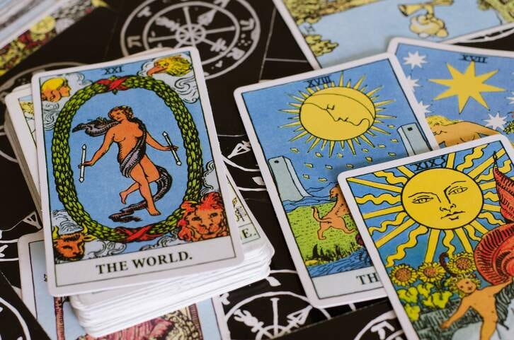

Tarot
O que é?
O tarot é um baralho esotérico com 78 cartas que representam arquétipos humanos, sentimentos e situações. É utilizado para fazer leituras sobre a vida das pessoas, previsões de futuro e quais caminhos têm chances de dar certo. Também pode ser usado como um instrumento de autoconhecimento e orientação, para esclarecer dúvidas e sugerir ações em muitos aspectos da vida.

Características do Tarot
- O tarot é composto por 78 cartas, incluindo 22 arcanos maiores e 56 arcanos menores
- Os arcanos menores são divididos em quatro naipes que representam os elementos ar, água, terra e fogo.
Arcanos Maiores
- (0) O Louco
- (I) O Mago
- (II) A Sacerdotisa
- (III) A Imperatriz
- (IV) O Imperador
- (V) O Papa
- (VI) Os Enamorados
- (VII) O Carro
- (VIII) A Força
- (IX) O Eremita
- (X) A Roda da Fortuna
- (XI) A Justiça
- (XII) O Enforcado
- (VIII) A Morte
- (XIV) A Temperança
- (XV) O Diabo
- (XVI) A Torre
- (XVII) A Estrela
- (XVIII) A Lua
- (XIX) O Sol
- (XX) O Julgamento
- (XI) O Mundo